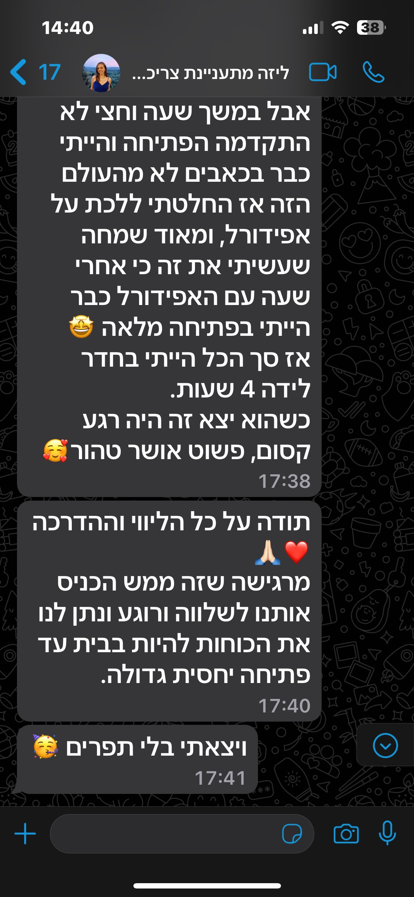
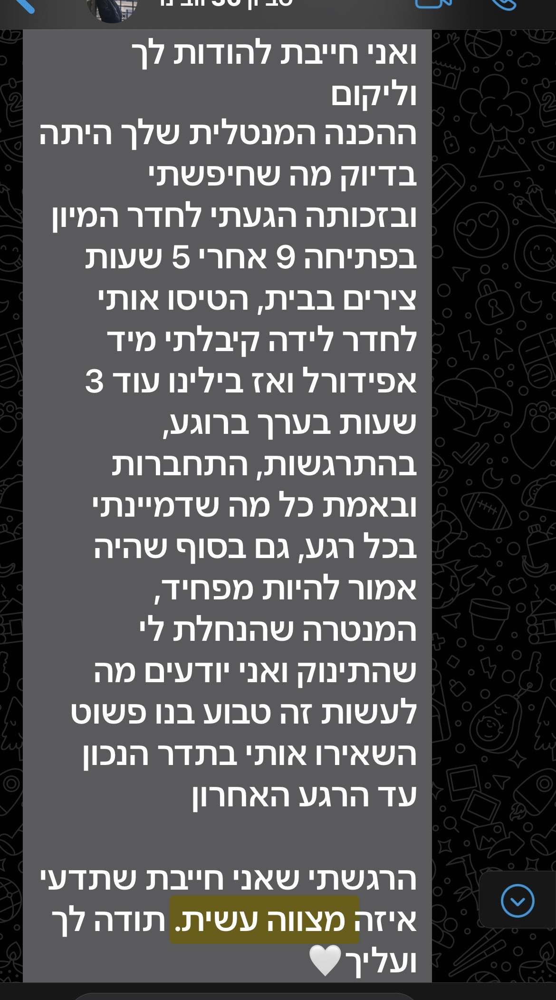
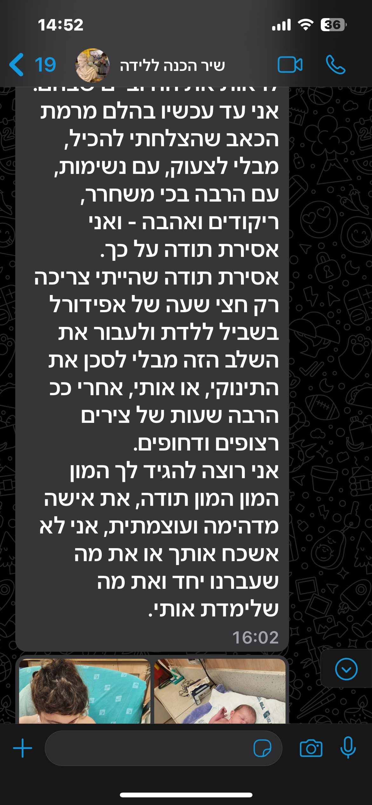
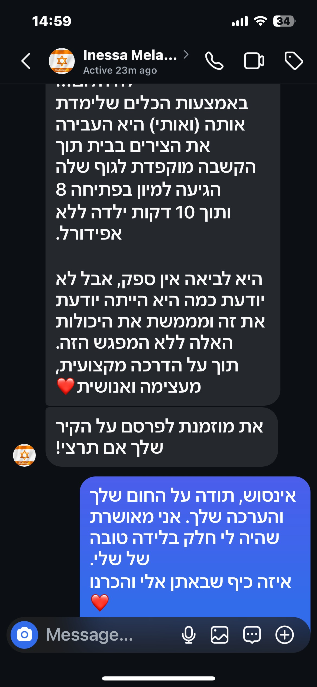
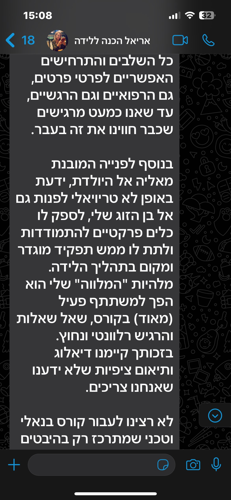
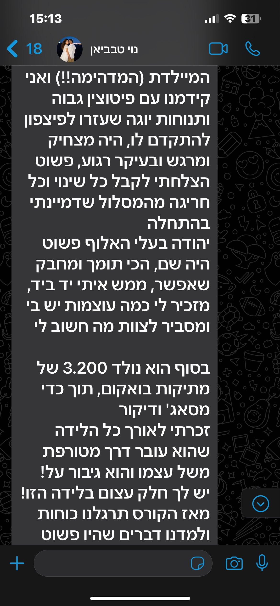
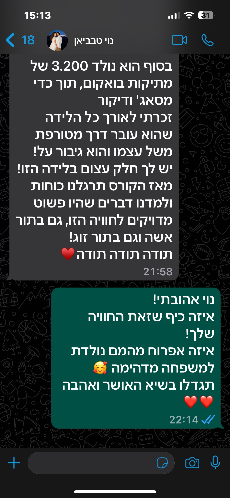

מה נכון בשבילך?
ליווי בלידה
עיבוד לידה
הכנה ללידה
"איך אני אעמוד בזה?"
"אני רוצה חוויה טובה ולא טראומטית."
הלידה היא חוויה שאין לה שידור חוזר. את יכולה להגיע אליה עם שקט נפשי, כלים שבאמת עובדים ובן זוג שיודע בדיוק מה תפקידו.
אני מיילדת עם 14 שנות ניסיון בחדרי לידה, ראיתי אלפי לידות מבפנים, ואני יודעת בדיוק איפה נשים נתקעות, מה באמת עוזר, ומה קורה כשמגיעים בלי הכנה. ועכשיו כל הידע הזה עומד לרשותך.
זה בשבילך אם את…
-
מוצפת במידע ועדיין מרגישה שהולכת אל הלא נודע
יש לך המון מידע, אבל את לא באמת יודעת מה לעשות איתו. ההמלצות סותרות, והבלבול רק גדל.
-
חוששת מאובדן שליטה
לא מוכנה שיחליטו עלייך, או שתרגישי שקופה בלידה שלך. שתצטרכי להסכים להכל רק כי את לא באמת מבינה.
-
פוחדת מהתערבויות וסיבוכים
שמעת מלא סיפורים על לידה טראומטית ורוצה לדעת איך להתנהל נכון כדי ששלך תהיה טובה.
-
רוצה שבן הזוג יהיה שותף מלא
ובשביל זה הוא צריך לדעת בדיוק מה לעשות. וזה הרבה יותר מלהחזיק לך את היד ולהגיד "כל הכבוד לך".
-
מעדיפה תהליך אישי
רואה ערך בהכנה שהיא שיחה מרתקת, מלאה בהתאמות אישיות, על פני למידה קבוצתית.
-
רוצה ללמוד ממיילדת
שתסביר לך איך הדברים באמת עובדים. מה חשוב, מה לא, איך להבדיל ביניהם ועל סמך מה לקבל החלטות.
-
רגילה לקחת אחריות
רוצה להבין למה, מה ואיך לעשות כדי שיהיה טוב. לא מסתפקת בלקוות, אלא עושה.
מה קורה במפגש
פגישה אישית זוגית של כ-4 שעות: בקליניקה בתל אביב, אצלך בבית, או בזום. אנחנו מתחילות ממך: מה מפחיד, מה חשוב, מה היית רוצה שיקרה. מתוך זה בונות תוכנית שהיא בדיוק בשבילכם.
זוגות באים למפגש עם תחושת לא-נודע, ויוצאים עם המון שקט. כי בתוך שעות בודדות, הם מבינים שללידה יש מבנה. מסתבר שאפשר להתכונן, וכל המידע שהציף אתכם מקבל סדר.
יש לי כלים ספציפיים לכל שלב. אנחנו לומדים ביחד מתי ואיך להשתמש בהם.
ובן הזוג? בסוף המפגש הוא תמיד אומר: "עכשיו אני יודע בדיוק מה תפקידי שם. לא תארתי לעצמי שיש לי כל כך הרבה מה לתת."
את יוצאת עם
קבצי אודיו לביטחון והרפיה שיקלו עלייך ברגע האמת
סרטוני תנועה מותאמים לשלבי הלידה, כדי שלא תצטרכי לזכור כלום תחת לחץ
שיטה לקבלת החלטות חכמות בחדר לידה: כשמציעים לך התערבויות, וכשאין לך מושג מה לענות חוץ מלהנהן מול חלוק לבן - תדעו בדיוק מה לשאול כדי לקבל החלטות חכמות
זמינות שלי עד הלידה. הציעו לזרז? מרגישה שמשהו לא בסדר? כותבת לי.
הכנה להנקה - מתנה ממני
סדנת הכנה להנקה מוקלטת
עם יועצת הנקה מוסמכת. כי ברגעים הראשונים אחרי הלידה את לא צריכה להתחיל לחפש תשובות. הכל כבר שם, מוכן בשבילך.
- מה עוזר לתינוק לינוק נכון
- איך יודעים אם התינוק אוכל מספיק
- איך למנוע פצעים, כאבים ותסכול
- מתי לפנות לעזרה, ואיך לזהות סימנים מראש
1,700 ₪ | ניתן לחלק לתשלומים
ניתן לקבל עד 80% החזר דרך קופת חולים, ביטוח פרטי וקרן מילואים
ביטול עסקה: בהתאם לחוק הגנת הצרכן ניתן לבטל בתוך 14 ימים.
יש שאלות? רוצה להכיר לפני שמחליטים? תכתבי לי בוואטסאפ.
תכתבי לי בוואטסאפשאלות שבטח יש לך
אבל זו רק פגישה אחת, זה יספיק?
זו פגישה ממוקדת שמביאה תוצאה כבר עכשיו. במקום להעמיס מידע שנשכח, אנחנו מתמקדות בדיוק במה שחשוב לך. "לא האמנתי שארגיש כל כך אחרת תוך ארבע שעות."
אולי פשוט אקח קורס של קופת חולים?
הוא כללי, קבוצתי, ולרוב מדלג על המון דברים סופר חשובים. כל החלק של טכניקות הרפיה, הפגת פחדים, התאמת תוכנית פעולה אישית וקבלת החלטות? תשכחי ממנו. כאן את מקבלת בדיוק את מה שאת צריכה, בלי הסחות דעת ובלי מידע מיותר.
הכול לא צפוי בלידה, אי אפשר להתכונן
אי אפשר לדעת מה יקרה. אבל אפשר לדעת איך להתמודד. וכשאת יודעת מה לעשות, איך להקל על עצמך ומה כדאי, את מרגישה שאת בשליטה גם אם משהו משתנה.
למה להכניס פחדים לראש?
בדיוק ההפך. מפוגגים את הפחד. עושים סדר, מורידים לחץ, ומחזירים שליטה. כי פתאום מסתבר שמה שחשבת הוא בכלל לא נכון, ומה שנכון כמעט ולא מפחיד.
יש לי סף כאב נמוך…
מושלם. זה בדיוק בשבילך. עם הכלים שתקבלי, תופתעי מעצמך. "הפתעתי את עצמי ממש!"
אני לא בטוחה שבן הזוג שלי יזרום עם זה…
רוב בני הזוג לא יודעים איך לתמוך עד שהם מגיעים. בסוף המפגש, הם תמיד אומרים: "עכשיו אני יודע בדיוק מה לעשות. לא תארתי לעצמי שיש לי משמעות כל כך גדולה."
אני רוצה לידה טבעית, הקורס מתאים?
הגעת בדיוק למקום הנכון. אם לידה טבעית ומעצימה, בלי אפידורל, זה מה שאת רוצה, יש לי המון מה ללמד אותך. טכניקות שיכוח כאב עצמי מעולם ה-Hypnobirthing הן ההתמחות שלי. אם תרצי להעמיק, תקבלי חומרים מוקלטים ואהיה זמינה לך להכוונה.
באיזה שבוע מומלץ לעשות הכנה?
סביב שבוע 29–30. מוקדם מספיק כדי שיהיה זמן לתרגל, ומאוחר מספיק כדי שהכל יהיה רענן בזיכרון לקראת הלידה.
איפה נפגשים?
בקליניקה נעימה בתל אביב (קרוב לתחנת רכבת השלום), אצלכם בבית, או בזום אם זה יותר נוח. אם הזום, נחלק לשני מפגשים של שעתיים.
כמה זמן המפגש?
כארבע שעות עם הפסקה. זה הזמן שצריך כדי לא למהר, לתרגל בפועל ולצאת עם תחושה שהכל ירד על מקום.
ליווי בלידה
כשאת נכנסת לחדר לידה בלי מלווה, את נכנסת לשטח של מישהו אחר. המיילדת שם אחראית על הרבה נשים במקביל: נכנסת, בודקת, יוצאת. בן הזוג רוצה לעזור ולא תמיד יודע מה לעשות.
כשאת מגיעה עם מלווה, הכל אחרת. יש מישהי שמכירה אותך באמת, שיודעת מה חשוב לך, מה מפחיד אותך, מה חשוב לך שיקרה. שמכירה את האופציות שעל השולחן ומספרת לך עליהן.
זה בשבילך אם את…
-
רוצה ללדת בבית חולים, אבל לא להרגיש חלק מפס ייצור
-
רוצה שמישהי תסביר לך מה קורה, בשפה שלך, בזמן אמת. ושתוכלי לקבל החלטות מתוך הבנה, לא מתוך לחץ
-
רוצה כמה שפחות התערבויות, ורוצה שמישהי תדע מתי הן מוצדקות ומתי לא
-
לא רוצה לנהל את הלידה. את רוצה להיות בה, ולדעת שיש מישהי שעוטפת אותך ודואגת רק לאינטרסים שלך
-
עברת לידה שלא הייתה מה שקיווית, ואת רוצה שהפעם יהיה אחרת
-
חוששת מכאב, מאובדן שליטה, ומהרגע שבו תהיי כואבת ולא במיטבך ומישהו יחליט בשבילך
לא דולה
לא מיילדת בית חולים
מיילדת שבחרת, והיא רק שלך. השילוב שלא ידעת שאת יכולה לקבל.
דולה
מיילדת
בית חולים
בית חולים
מיילדת
מלווה
מלווה
בודקת פתיחה ותומכת בך עוד משלב הבית
✗
✗
✓
יודעת לפענח מה שלום התינוק, לפי המוניטור
✗
✓
✓
ייעוץ רפואי אחראי
✗
✓
✓
מייצגת רק אותך
✓
✗
✓
מכירה אותך לפני הלידה
✓
✗
✓
נוכחות רציפה ומלאה
✓
✗
✓
איך זה עובד
-
לאורך כל ההריון
מרגע שיצאנו לדרך, אני מעורבת בכל מה שקורה בהריון שלך. שאלה בשתיים בלילה, תוצאת בדיקה שמבלבלת, תחושה שמשהו לא בסדר, אני כאן. לא ממתינה לבוקר. מגיבה, מסבירה, מרגיעה. כדי שתוכלי לישון.
סביב שבוע 32–33 נפגש פעמיים להיכרות מעמיקה והכנה טובה. עד אז, כל מה שעולה מגיע אלי. המענה שלי הוא לא תשובה גנרית, הוא תשובה שמכירה אותך ואת ההריון הספציפי שלך.
-
בבית, כשהלידה מתחילה
אם צריך, אני מגיעה אלייך. וכאן ההבדל שמשנה הכל: אני יכולה לבדוק פתיחה ולנטר את דופק התינוק. לא מנחשות. יודעות בדיוק איפה הלידה עומדת.
מתוך זה מחליטות ביחד מתי הזמן הנכון לצאת למיון. כשאת יוצאת מהבית בשלב הנכון, רגועה, בסביבה שלך, מגיעה לחדר הלידה אחרת לגמרי.
-
בחדר הלידה
המערכת הרפואית עושה את העבודה הרפואית. אבל אף אחד שם לא עוצר לשאול איך את מרגישה. לא רואה מה את צריכה עכשיו. לא אומר לך שאת עושה את זה, ומתכוון לזה.
העיניים שרואות את מה שאת צריכה, ונותנות לך את זה.
עוטפת ודואגת לך לאורך כל הדרך
לידה זה לא רק כאב. זה גם התחושה שאת לא יודעת מה קורה, לא יודעת מה לעשות עכשיו, ואין מי שיגיד לך. חוסר אונים בתוך משהו שהוא גם הכי גדול שעברת.
אני שם בשביל זה. רואה אותך, מזהה מתי הגוף מתוח, מתי צריך לזוז, מתי צריך לנשום. עיסוי בגב, כניסה למקלחת, יד מלטפת. הכוונה ברגע עצמו, לא תיאוריה שאת צריכה לזכור בלחץ, אלא פשוט לתת לגוף שלך לעשות את מה שהוא נועד לעשות.
לידה שבוודאות תהיה יותר טובה
הצוות עסוק, ומנהל כמה נשים במקביל. הם לא יעמדו איתך שעות ויעשו איתך תרגילים ממוקדים. לא יכוונו אותך לתנועות שמקדמות את הלידה, לרוגע, להרפיה, לנשימה שמשחררת את הגוף.
אני כן. תנועה נכונה בשלב הנכון עוזרת לתינוק להתמצב טוב יותר באגן, נשימה ורוגע משנים את הקצב, וביחד הם מקצרים לידות, מפחיתים מצוקה של תינוק, ולפעמים מונעים ניתוח.
מגנה רק על האינטרסים שלך, בלי קשר לעומסים ופרוטוקולים
כשהצוות מציע התערבויות, הם לא תמיד מרחיבים בהסברים ולא תמיד מספרים לך מה החלופות. ואת, מתוך חוסר הבנה, עייפות וכאב, פשוט מנהנהת.
אני מכירה את מה שקורה בחדר לידה. יודעת מתי מה שמציעים לך משרת אותך, ומתי זה ממש לא מה שאת צריכה. מסבירה לך מה קורה ומה האופציות, בשפה שמובנת. מה שלא מוסבר, הדמיון ממלא. ושנים אחרי, נשים מסתובבות עם תחושה רעה שלא הייתה חייבת להיות שם.
בן הזוג הופך לשותף אמיתי
גברים מגיעים לחדר לידה עם רצון טוב ולפעמים ממש בלי מושג מה לעשות. אני מכוונת אותו: מזכירה, מדגימה, ואז עושה צעד אחורה כדי שהוא יוביל. הוא לא צריך לנהל לוגיסטיקה, לא לזכור כלום מההכנה, אלא פשוט להיות נוכח ולהתמסר לתהליך הזה איתך.
יש זוגות שרוצים שבן הזוג יהיה הדמות המשמעותית ביותר בתוך הרגעים האינטימיים האלה. כשזה נכון לכם, אני תומכת בזה בכל כוחי ועובדת דרכו. ויש זוגות שהדינמיקה שם אחרת. על זה אנחנו מדברים לפני, ואני שם בשביל מה שנכון לכם.
-
אחרי הלידה
מוודאה שאת בטוב, עוזרת לך להתחיל להניק, ואם לא הנקה, אז בסחיטת החלב הראשוני. בודקת שאת לא מדממת יותר מדי. הולכת רק כשאני יודעת שכולכם בסדר.
שאלות שאולי עולות לך
מה אם תהיי בלידה אחרת כשאני בצירים?
הסיכוי שאהיה בלידה אחרת בדיוק כשאת מתקשרת קיים. לא גבוה, אבל לא אגיד לך שזה לא יכול לקרות. לכן יש לי שתי מיילדות מלוות שבחרתי בפינצטה ואני סומכת עליהן. הן מכירות את הגישה שלי, עובדות בדיוק ככה, ואני יכולה לעמוד מאחוריהן. אם אני תפוסה כשתתקשרי, אחת מהן מגיעה. כשאני מתפנה, תחליטי מה מרגיש לך נכון: היא נשארת איתך עד הסוף, או שאני מגיעה ומחליפה.
מה קורה אם אני יולדת בניתוח קיסרי?
תלוי מאיפה מגיעים אליו.
אם הניתוח מתוכנן מראש, יש נשים שרוצות שאהיה שם גם בחדר ניתוח, ויש שלא. אם את רוצה, נדבר. אם לא, מה שקורה מבחינת התשלום במצב כזה מפורט בחוזה.
אם הגענו לקיסרי תוך כדי הלידה, הייתי שם כל הדרך. ממשיכים ביחד גם אחרי.
מתי הכי נכון להתחיל?
בכל שלב שאת מרגישה שאת רוצה את המעטפת הזאת. יש נשים שמגיעות להבנה הזאת מוקדם מאוד בהריון. יש כאלה שממש לקראת הלידה. כל אחת ומה שמרגיש לה.
איך הצוות הרפואי יתייחס לנוכחות שלך?
הצוות לא מתפלא כשנכנסת מלווה מקצועית לחדר, זה חלק מהתמונה. לפעמים אני מכירה את המיילדות שם, ולפעמים לא, אבל בשני המקרים נוכחות של מישהי שמכירה את השפה משנה את הדינמיקה בחדר. את לא לבד מול מערכת שלמה.
עיבוד לידה
לפעמים הלידה לא הייתה מה שדמיינת. שיחה, עיבוד ופשוט מישהי שמבינה, יכולים לשנות הכל.
לפרטים נוספים
14 שנה בחדרי לידה.
הפעם, בצד שלך בלבד.
14 שנה עבדתי בחדרי לידה. לפני זמן לא רב עזבתי, כדי להיות פנויה לחלוטין לזוגות שאני מלווה באופן פרטי.
כי אני מאמינה בדבר אחד בכל ליבי: יש לך יכולת משמעותית להשפיע על הלידה שלך. וזה פשוט פשע לא לעשות את זה.
אני מכירה את הזוגות שלי לעומק. בונה יחד איתם את הדרך. לומדים מה צפוי, מה בשליטה ומה לא, ואיך לפעול כשהמציאות מפתיעה. אני מביאה איתי את כל העולמות: ידע רפואי, מגע, שיטות הרפיה עמוקה, תנועה, כל מה שעוזר לגוף לעשות את העבודה שלו ברכות ובביטחון.
בסוף, מה שאני נותנת הוא שקט. הידיעה שמי שמחזיקה אותך יודעת בדיוק מה לעשות עם מה שיש, ומלווה אותך יד ביד, כל הדרך.
בואי נכיר
14
שנות ניסיון בחדרי לידה
8,000+
לידות קיבלתי
מומחית לטכניקות הרפיה עמוקה
מטפלת ברפואה משלימה
10,500+
עוקבות באינסטגרם
24/7
זמינות
המלצות







גללי לעוד ←
תכנים יומיומיים על הריון, לידה והנקה
10,500+
עוקבות באינסטגרם
עקבי אחרי ←
המלצות שלי